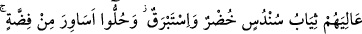
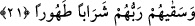

müşâhedesindedir. Müşâhedesiz ev hiç bir şeye yaramaz. Zâhidler Firdevs’i ararlar, biz
ise dostun yüzünü ararız.
et-Tevilâtü’n-necmiyye’de bu âyetle ilgili olarak şu ifâdeler yer almaktadır: “Orada
nereye baksan bir nimet ve büyük bir saltanat görürsün” yâni sen tevhid makamını ve
vahdet hâlini kendi nefsinde gerçekleştirip hayata geçirirsen, şühûd nimetine erer,
müşâhede edilen mülk ve zâtı, isim ve fiilleri ile kebir olanı elde edersin.
Şu hâlde dünyada “büyük bir saltanat” tâbirinden maksad, mânevî cennet ehlinin elde
edeceği “şühûd” nimetidir. Mârifet ve rü’yet saltanatının üstünde, ondan daha büyük bir
saltanat yoktur.
Bâzı tefsir kitaplarında belirtildiğine göre; “mülk” bir kimsenin emri altındakiler
üzerindeki emr ve yasaklama şeklindeki tasarruf gücü demektir. Nitekim “iktidar”
anlamında olmak üzere “mülk” kelimesi bu kökten türemektedir. Buna karşılık “milk”
ise, insanın kendi mülkiyeti içindeki malı ve mülkü üzerinde dilediği biçimde tasarruf
yetkisi demektir. Bu kökten mal sâhibine Arapçada “mâlik” denmiştir. Mülkün içinde
milk de vardır. Çünkü her melik mâliktir, fakat her mâlik melik değildir.
21. Üzerlerinde yeşil ipekten ince ve kalın elbiseler vardır; gümüş bilezikler
takınmışlardır. Rableri onlara tertemiz bir içki içirir.
“Üzerlerinde yeşil ipekten ince ve kalın elbiseler vardır.” Yâni; onların etraflarında
ölümsüz gençler dolaşır. Üzerlerinde ince ve kalın ipekten yeşil elbiseler vardır. Bu
âyette yer alan “sündüs” ince ve değerli ipek kumaş demektir. Elbise anlamına gelen
“siyab” kelimesinin ince ipek anlamına gelen “sündüs” kelimesine izâfeti “yüzük”
anlamına gelen “hatem” kelimesinin yapılmış olduğu ana madde olan “gümüş” anlamına
gelen “fıdda” kelimesine izâfeti gibidir. Yâni onların giydikleri elbise, ince ve güzel
ipek kumaştandır.
“Hudr” yeşil anlamına gelen “ahdar” kelimesinin çoğulu olup “siyâb” kelimesinin
sıfatıdır. Yâni onlar, yeşil elbise giyeceklerdir. Nitekim, “onlar yeşil elbiseler
giyerler” (el-Kehf, 18/31) âyet-i kerîmesi de bunu haber vermektedir. Bu âyetteki
“hum/onlar” zamiri, daha önce haklarında bilgi verilen “ebrâr” kelimesine dönmektedir.
Bunu ifâdenin gelişinden çıkarmaktayız. Çünkü âyetlerin siyakı, bahsedilen ebrârın elde
edecekleri nimet ve ikramların sayılma noktasıdır. Şu hâlde uygun olanı, bu âyette
zikredilen ince ve kalın yeşil ipek elbiseleri yukarda geçen “vildan: ölümsüz gençler”in
giymeleri değil, onların aralarında dolaşıp hizmet ettikleri “ebrâr”ın giymiş olmalarıdır.
İmam Fahreddin Râzi’ye göre; “Üzerlerinde ince ve kalın ipekten yeşil elbiseler
vardır” ifâdesinden maksad; “onların üzerlerine kurulan çadır, ince ve yeşil ipek